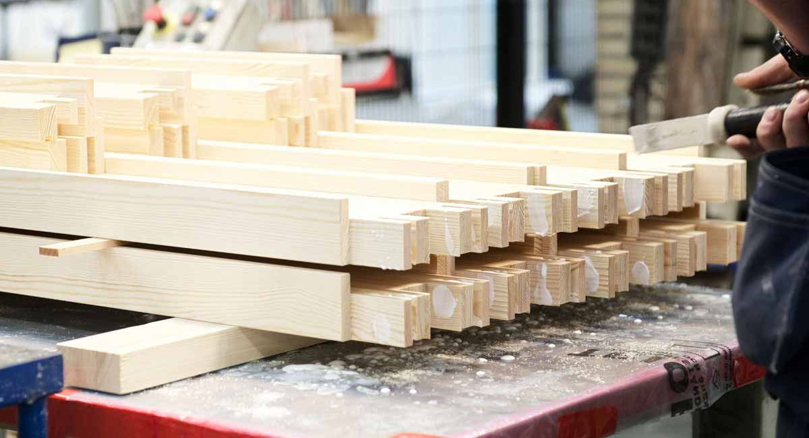
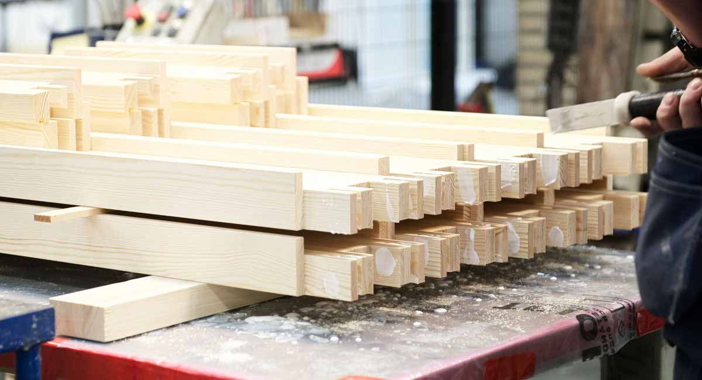

Tradition. Kunskap. Kvalitet.
 

Välkommen till Tomoku Hus
Högklassig råvara, träkunskap och hantverk från Sverige kombineras med höga kvalitetskrav och precision från Japan
för att tillverka produkter med mycket hög kvalitet. Tomoku Hus AB i Dalarna är en av Sveriges största tillverkare av trähuskomponenter.
Tomoku Hus erbjuder dig produkter och lösningar inom följande kategorier:
HELGBO - Attefallshus på 30m2
HELGBO är ett välbyggt kvalitetshus i traditionsrik stil och följer de nya normerna för hus utan byggnadslov (Attefallsstugan / Attefallshuset). Besök gärna vår HELGBO visningsstuga med sovloft på vårt område. Pardörrar och fönster kan läggas till, och vi kan anpassa huset efter Era önskemål!

Tomokubågen
TOMOKUBÅGEN ger dig möjligheten att på ett snabbt och enkelt sätt få ett bra energiglasfönster. Låt fönsterkarmen sitta kvar och byt enbart de gamla bågarna till TOMOKUBÅGEN. Då slipper man det stora ingrepp i huset som karmbyte innebär. Bytet av bågen kan enkelt utföras också på vintern. Samtidigt som du minskar energiförbrukningen och förenklar underhållet så bibehåller du husets karaktär.
På grund av hög beläggning i vår fönsterproduktion ber vi dig ta kontakt angående leveranstider.
Fönster & Fönsterdörrar
Fönster spelar en viktig roll när det gäller att ge huset karaktär. För oss på Tomoku Hus är det viktigt att fönster och fönsterdörrar har rätt design och mycket hög kvalitet. Alla dessa produkter är CE-märkta. Till våra fönster och fönsterdörrar används trä med bästa kvalitet.

Dalecarlian Classic Homes
Med vår egen husserie Dalecarlian Classic Homes vill vi fortsätta den långa svenska traditionen att bygga och designa tidlöst vackra hus. Våra hus uppfyller modernaste isolationsvärden och komfortegenskaper och är konstruerade med våra egna väggblock och fönster.
Småstugor, Gäststugor och Garage
Våra väggblock används till massor av olika lösningar. Från små gästhus till fina verktygsbodar men även som kontor och musikrum. Vår distributör i England, Garden2Office, har t.ex. redan levererat runt 100 olika modeller på små hus. Småhus levereras i byggsats som man enkelt sätter ihop själv.

Väggblock
Väggblock från oss förenklar byggandet och ger en kortare byggtid jämfört med lösvirke. Det går snabbt att komma under tak. Logistiken kring husbyggnationen förenklas betydligt med färdigisolerade block.